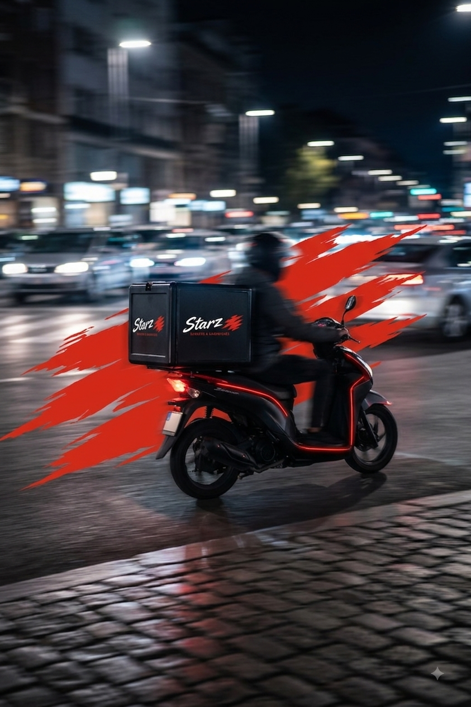
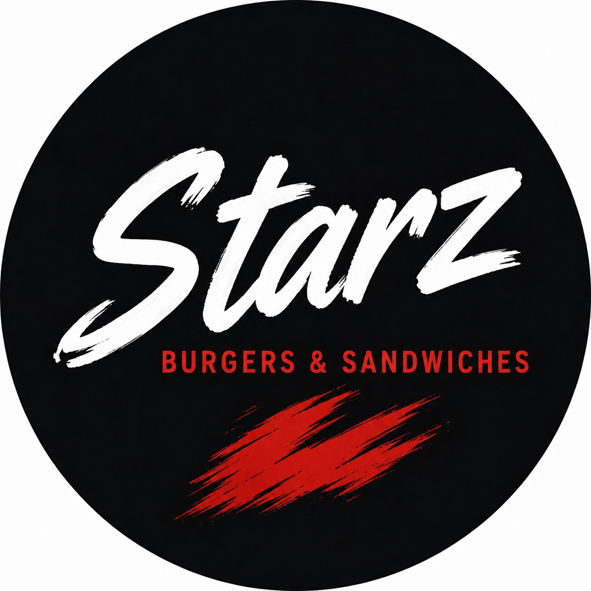

دراسة الجدوى وخطة العمل الشاملة

ستارز™ (STARZ)
الغرض من الوثيقة: خطة عمل داخلية ودراسة جدوى تشغيلية
تاريخ الإعداد: أغسطس 2026 | الموقع: الخرطوم بحري، السودان
الجهة المعدة: المالك الحصري (StarZ™)
1. الملخص التنفيذي
- يتمتع السوق السوداني بطلب عالٍ وغير ملبى على العلامات التجارية الغذائية الفاخرة والمبتكرة التي تقدم تجربة تحاكي المعايير العالمية.
- النماذج التقليدية للمطاعم تحمل مخاطر هائلة بسبب التكاليف الرأسمالية العالية (الإنشاءات والديكورات المكلفة) والأعباء التشغيلية المرتفعة.
- مشروع ستارز™ يعيد صياغة هذا النموذج: علامة تجارية متخصصة في البرجر والساندوتشات ذات طابع فاخر، مبنية على هيكل تشغيلي مرن للغاية (Lean Operations).
- بفضل تأمين حقوق استغلال الموقع (100 متر مربع)، يتخلص المشروع تماماً من الضغوط المالية الشهرية للإيجارات، مما يقلل المخاطر.
- استراتيجية بناء سريع وفعّال باستخدام حاوية شحن 20 قدم كمطبخ عالي القدرة، مقترنة بتسويق هجومي.
- الفلسفة الأساسية هي الكفاءة المطلقة لرأس المال: ستارز™ يظهر بمظهر فاخر ومكلف، ليس بسبب تكاليف البناء الباهظة، بل بفضل دقة الهوية البصرية، الإضاءة الاستراتيجية، والتغليف.
2. الهوية التجارية (1/2)
- التموضع: مفهوم "وجبات سريعة بجودة عالية" (Fast Good) يسهل الوصول إليه ويتناسب ثقافياً مع السوق، ويقدم طعماً عالمياً بأسعار مدروسة.
- اسم العلامة: ستارز للبرجر والساندوتشات (STARZ Burgers & Sandwiches).
- الهوية البصرية: اللون الأسود المطفي (#0D0D0D) هو المهيمن، مع طباعة باللون الأبيض الصارخ (#FFFFFF)، ولمسات جريئة باللون الأحمر (#E63920) والرمادي الداكن.
- الخطوط: عريضة وحديثة (مثل Bebas Neue و Montserrat أو ما يعادلها).
نكهة جريئة. بكل بساطة.
2. التموضع في السوق (2/2)
- الخطاف النفسي (Psychological Hook): الاستفادة من رغبة المستهلك المحلي في تجربة علامات تجارية تبدو عالمية وحديثة.
- سيعمل الموقع الفعلي (واجهة الكشك) كلوحة إعلانية.
- المعدن المموج الأسود، والشعار الأبيض المضيء الضخم، وشرائط إضاءة (LED) الحمراء ستخلق جمالية سينمائية حضرية تتجاوز بكثير تكلفتها الإنشائية الفعلية.
3. الموقع والهيكل الإنشائي
تقتصر البصمة المادية للمشروع بصرامة على ما يولد إيرادات ويحسن تجربة العميل.
- الموقع: 10م × 10م (100 متر مربع) في الخرطوم بحري. (الحقوق مؤمنة).
- المطبخ: حاوية شحن 20 قدم معدلة خصيصاً، تتميز بنافذة خدمة/استلام تواجه الشارع الرئيسي لتسهيل طلبات التيك أواي وتطبيقات التوصيل.
- الجلوس: ترتيب خارجي مريح، 4 طاولات داكنة، 20 مقعداً، 6 مقاعد بار.
- فلسفة البناء: توجيه الميزانية نحو المظهر الخارجي وقوة معدات المطبخ بدلاً من التشطيبات الفاخرة.
4. الميزانية الرأسمالية (CAPEX)
سقف الإطلاق الأولي محدد بصرامة عند 56,000,000 ج.س. تزويد المطبخ بمعدات مستعملة ساعد في تكوين احتياطي نقدي صلب.
| الفئة | التفاصيل والوصف | السقف المعتمد (ج.س) |
|---|
| الأرض والحاوية | التجهيز، الردميات، شراء الحاوية وتعديلها (الحدادة والعزل) | 16,000,000 |
| التمديدات والجلوس | الكهرباء، السباكة، طاولات وكراسي خارجية | 3,000,000 |
| معدات المطبخ | معدات مكملة، أنظمة الشفط، طاولات ستانلس | 8,000,000 |
| العلامة والتغليف | اللافتات المضيئة، ومخزون تغليف فاخر أولي | 7,000,000 |
| تصاريح ومخزون | رسوم بلدية وصحية، والمواد الغذائية للبداية | 5,000,000 |
| رأس مال وطوارئ | احتياطي نقدي للتشغيل، وهامش مالي للطوارئ | 17,000,000 |
| سقف التكلفة الإجمالية المستهدفة للافتتاح | 56,000,000 |
5. العمليات التشغيلية
- الكفاءة التشغيلية: تم تصميم القائمة من أجل التجميع السريع، الاتساق العالي، وتقليل احتمالية التلوث المتبادل أو الهدر.
- توحيد البروتينات: نعتمد على توحيد البروتينات الأساسية (أقراص لحم السماش، فيليه الدجاج المقرمش) وتغيير الإضافات والصلصات فقط لصنع التنوع.
- خبز البرجر: يمثل الخبز نقطة تميز رئيسية. نستهدف جودة تماثل خبز الحليب الياباني طري، غني، ذو بنية ممتازة، ومثالي للتغليف والتوصيل دون أن يفقد جودته.
القائمة الأساسية (Menu) والتسعير
قسم اللحوم (Beef Smashburgers)
- كلاسيك ستارز سماش برجر (مفرد) - 14,000 ج.س
- ستارز سيجنتشر سماش - 16,000 ج.س
- دبل ستارز سماش برجر - 18,000 ج.س
قسم الدجاج (Crispy Chicken)
- ساندوتش دجاج مقرمش كلاسيكي - 16,000 ج.س
- ساندوتش دجاج مقرمش حار - 17,000 ج.س
- راب دجاج ستارز - 15,000 ج.س
الأطباق الجانبية والمشروبات
- بطاطس (عادية/مبهرة/محملة) - 6,000 إلى 12,000 ج.س
- حلقات البصل - 8,000 ج.س | مشروبات - 4,000 ج.س
6. اقتصاديات الوحدة ونقطة التعادل
بافتراض طلب يتكون من ساندوتش (16,000)، بطاطس (6,000)، ومشروب (4,000):
- متوسط قيمة الطلب (AOV): 26,000 ج.س.
- تكلفة البضائع (COGS): حد أقصى 35% (9,100 ج.س للطلب المتوسط).
- هامش المساهمة: 65% (16,900 ج.س ربح من كل طلب).
| إجمالي المصروفات الثابتة (رواتب، طاقة، تسويق، إلخ) | 4,000,000 ج.س / شهرياً |
|---|
تحليل نقطة التعادل
236 طلباً في الشهر
بافتراض العمل 30 يوماً، يصل ستارز™ للتعادل عند بيع 8 طلبات يومياً فقط.
7. مصفوفة الربحية المستهدفة
بمجرد تجاوز حاجز الـ 8 طلبات، يتدفق هامش المساهمة لتعظيم الأرباح.
| الطلبات اليومية |
الإيراد الشهري |
التكلفة المتغيرة |
المصروفات الثابتة |
صافي الربح (ج.س) |
| 8 (تعادل) | 6,240,000 | 2,184,000 | 4,000,000 | 56,000 |
| 25 (منخفض) | 19,500,000 | 6,825,000 | 4,000,000 | 8,675,000 |
| 50 (أساسي) | 39,000,000 | 13,650,000 | 4,000,000 | 21,350,000 |
| 100 (أقصى) | 78,000,000 | 27,300,000 | 4,500,000* | 46,200,000 |
(* زيادة المصروفات إلى 4.5 مليون لحساب استهلاك الطاقة وإمكانية إضافة موظفين إضافيين لتسريع الإنتاج).
8. استراتيجية التسويق والتغليف (1/2)
التسويق ليس نشاطاً ثانوياً؛ بل هو جوهر الاستحواذ على العملاء.
- التغليف كإعلان متحرك: تم تخصيص ميزانية ضخمة (5 ملايين ج.س) للتغليف الأولي.
- التغليف ليس وظيفياً فقط، بل تم تصميمه ليكون مرئياً في أيدي العملاء، وداخل السيارات، وفي الجامعات.
- العلب والأكياس ذات اللون الأسود المطفي مع الشعار الأبيض واللمسات الحمراء تشكل إعلاناً متحركاً مجانياً يجوب الشوارع.
8. الاستراتيجية الرقمية والتوصيل (2/2)
- السوشيال ميديا: السوق السوداني يعتمد بشدة على المحتوى البصري. سيتم إنتاج محتوى يركز على (المنتج، التغليف، وتجربة الفتح) لخلق حالة من الطلب والندرة (Scarcity).
- تجربة التوصيل (Delivery): النموذج لا يعتمد حصرياً على الجلوس.
- سيتم تحسين خدمة الطلب عبر الإنترنت و(WhatsApp) لتكون سريعة وسلسة.
- الهدف هو ضمان أعلى معدل دوران للطلبات (High Throughput) خلال ساعات الذروة المسائية.

نهاية الوثيقة